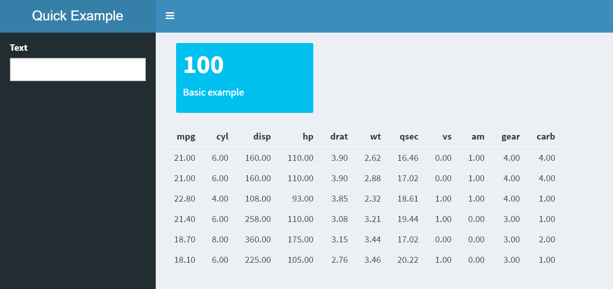

9 Intro to dashboards

9.1 Basic structure
Preview a simple shinydashboard
- Create and preview a simple
shinydashboard
ui <- dashboardPage(
dashboardHeader(title = "Quick Example"),
dashboardSidebar(selectInput("select", "Selection", c("one", "two"))),
dashboardBody(
valueBoxOutput("total"),
dataTableOutput("monthly")
)
)
server <- function(input, output, session) {
output$total <- renderValueBox(valueBox(100, subtitle = "Flights"))
output$monthly <- renderDataTable(datatable(mtcars))
}
shinyApp(ui, server)9.2 Dropdown data
Review a technique to populate a dropdown
- Use
purrrto create a list with the correct structure for theshinydrop down
airline_list <- carriers %>%
select(carrier, carriername) %>% # In case more fields are added
collect() %>% # All would be collected anyway
split(.$carriername) %>% # Create a list item for each name
map(~.$carrier) # Add the carrier code to each item
head(airline_list)## $`AirTran Airways Corporation`
## [1] "FL"
##
## $`Alaska Airlines Inc.`
## [1] "AS"
##
## $`Aloha Airlines Inc.`
## [1] "AQ"
##
## $`American Airlines Inc.`
## [1] "AA"
##
## $`American Eagle Airlines Inc.`
## [1] "MQ"
##
## $`Atlantic Southeast Airlines`
## [1] "EV"- In the app code, replace
c("one", "two", "three")withairline_list
# Goes from this:
dashboardSidebar(selectInput("select", "Selection", c("one", "two"))),
# To this:
dashboardSidebar(selectInput("select", "Selection", airline_list)),- Re-run the app
9.3 Update dashboard items
Create base query for the dashboard using dplyr and pass the results to the dashboard
- Save the base “query” to a variable. It will contain a carrier selection. To transition into
shinyprogramming easier, the variable will be a function.
base_dashboard <- function(){
flights %>%
filter(uniquecarrier == "DL")
}
head(base_dashboard())## # Source: lazy query [?? x 31]
## # Database: postgres [rstudio_dev@localhost:/postgres]
## flightid year month dayofmonth dayofweek deptime crsdeptime arrtime
## <int> <dbl> <dbl> <dbl> <dbl> <dbl> <dbl> <dbl>
## 1 7009389 2008 12.0 13.0 6.00 654 700 1149
## 2 7009390 2008 12.0 13.0 6.00 1646 1645 1744
## 3 7009391 2008 12.0 13.0 6.00 1207 1145 1854
## 4 7009392 2008 12.0 13.0 6.00 1935 1940 2130
## 5 7009393 2008 12.0 13.0 6.00 556 555 754
## 6 7009394 2008 12.0 13.0 6.00 858 900 1028
## # ... with 23 more variables: crsarrtime <dbl>, uniquecarrier <chr>,
## # flightnum <dbl>, tailnum <chr>, actualelapsedtime <dbl>,
## # crselapsedtime <dbl>, airtime <dbl>, arrdelay <dbl>, depdelay <dbl>,
## # origin <chr>, dest <chr>, distance <dbl>, taxiin <dbl>, taxiout <dbl>,
## # cancelled <dbl>, cancellationcode <chr>, diverted <dbl>,
## # carrierdelay <dbl>, weatherdelay <dbl>, nasdelay <dbl>,
## # securitydelay <dbl>, lateaircraftdelay <dbl>, score <int>- Use the base query to figure the number of flights for that carrier
base_dashboard() %>%
tally() %>%
pull()## integer64
## [1] 451931- In the app, remove the
100number and pipe thedplyrcode into the valueBox() function
# Goes from this:
output$total <- renderValueBox(valueBox(100, subtitle = "Flights"))
# To this:
output$total <- renderValueBox(
base_dashboard() %>%
tally() %>%
pull() %>%
valueBox(subtitle = "Flights"))- Create a table with the month name and the number of flights for that month
base_dashboard() %>%
group_by(month) %>%
tally() %>%
collect() %>%
mutate(n = as.numeric(n)) %>%
rename(flights = n) %>%
arrange(month)## # A tibble: 12 x 2
## month flights
## <dbl> <dbl>
## 1 1.00 38256
## 2 2.00 36275
## 3 3.00 39829
## 4 4.00 37049
## 5 5.00 36349
## 6 6.00 37844
## 7 7.00 39335
## 8 8.00 38173
## 9 9.00 36304
## 10 10.0 38645
## 11 11.0 36939
## 12 12.0 36933- In the app, replace
head(mtcars)with the piped code, and re-run the app
# Goes from this:
output$monthly <- renderTable(head(mtcars))
# To this:
output$monthly <- renderDataTable(datatable(
base_dashboard() %>%
group_by(month) %>%
tally() %>%
collect() %>%
mutate(n = as.numeric(n)) %>%
rename(flights = n) %>%
arrange(month)))9.4 Integrate the dropdown
Use shiny’s reactive() function to integrate the user input in one spot
- In the original
base_dashboard()code, replacefunctionwithreactive, and"DL"withinput$select
# Goes from this
base_dashboard <- function(){
flights %>%
filter(uniquecarrier == "DL")}
# To this
base_dashboard <- reactive({
flights %>%
filter(uniquecarrier == input$select)})- Insert the new code right after the
server <- function(input, output, session)line. The full code should now look like this:
ui <- dashboardPage(
dashboardHeader(title = "Quick Example"),
dashboardSidebar(selectInput("select", "Selection", airline_list)),
dashboardBody(
valueBoxOutput("total"),
dataTableOutput("monthly")
)
)
server <- function(input, output, session) {
base_dashboard <- reactive({
flights %>%
filter(uniquecarrier == input$select)
})
output$total <- renderValueBox(
base_dashboard() %>%
tally() %>%
pull() %>%
valueBox(subtitle = "Flights")
)
output$monthly <- renderDataTable(datatable(
base_dashboard() %>%
group_by(month) %>%
tally() %>%
collect() %>%
mutate(n = as.numeric(n)) %>%
rename(flights = n) %>%
arrange(month)
))
}
shinyApp(ui, server)Re-run the app
Disconnect form database
dbDisconnect(con)